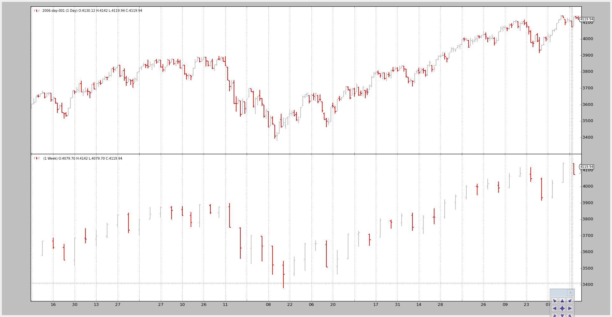

All Posts
Escape from OHLC Land
- Mar 08, 2016
- mementum
One of the key concepts applied during the conception and development of
backtrader was flexibility. The metaprogramming and introspection
capabilities of Python were (and still are) the basis to keep many things
flexible whilst still being able to deliver.
Release 1.2.1.88
- Mar 07, 2016
- mementum
Changing the minor version number from 1 to 2 has taken sometime,
but the deprecation of the old DataResampler and DataReplayer have led
to it.
Data Filters
- Nov 21, 2015
- mementum
Some time ago Ticket #23 got me thinking about a potential improvement for the discussion which was held in the context of that ticket.
User Defined Commissions
- Nov 20, 2015
- mementum
The commission schemes implementation was reworked not so long ago and the basics were outlined in Extending Commissions. The most important part of the rework involved:
Extending Commissions
- Nov 05, 2015
- mementum
Commissions and asociated functionality were managed by a single class
CommissionInfo which was mostly instantiated by calling
broker.setcommission.
MultiTrades
- Oct 05, 2015
- mementum
Following a request at Tick Data and Resampling
release 1.1.12.88 of backtrader support “MultiTrades”, ie: the ability to
assign a tradeid to orders. This id is passed on to Trades which makes
it possible to have different categories of trades and have them simultaneously
open.

Bar Synchronization
- Oct 04, 2015
- mementum
Ticket #23 raises some
questions as to whether backtrader can look into calculating
a RelativeVolume indicator.

Tick Data and Resampling
- Sep 25, 2015
- Oct 06, 2015
- mementum
backtrader could already do resampling up from minute data. Accepting tick
data was not a problem, by simply setting the 4 usual fields (open, high, low,
close) to the tick value.

Plotting on the same axis
- Sep 21, 2015
- Sep 22, 2015
- mementum
Following a comment on the blog a slight addition (luckily just a few lines of code) has been made to plotting.

Writers - Write it down
- Sep 14, 2015
- mementum
With the 1.1.7.88 release backtrader gets a new addition: writers
MultiData Strategy
- Sep 03, 2015
- mementum
Because nothing in the world lives in isolation it can well be that the trigger to buy an asset is actually another asset.
Real World Usage
- Aug 27, 2015
- mementum
Finally it seems it pays having gotten down to developing backtrader.
Data - Replay
- Aug 25, 2015
- mementum
The time is gone and testing a strategy against a fully formed and closed bar is good, but it could be better.

Data - Multiple Timeframes
- Aug 24, 2015
- mementum
Sometimes investing decisions are taken using different timeframes:
Data Resampling
- Aug 23, 2015
- mementum
When data is only available in a single timeframe and the analysis has to be done for a different timeframe, it’s time to do some resampling.
Pandas DataFeed Support
- Aug 21, 2015
- mementum
Amongst some minor enhancementss and some OrderedDict tweaks for better
Python 2.6 support, the latest release from backtrader adds support for
analyzing data from a Pandas Dataframe aka Time Series.
Automating backtrader BackTesting
- Aug 16, 2015
- Aug 22, 2015
- mementum
Analyzer support in bt-run.py included
Observers and Statistics
- Aug 12, 2015
- Aug 19, 2015
- mementum
Strateties running inside the backtrader do mostly deal with datas and
indicators.

Datafeed Development
- Aug 11, 2015
- mementum
In CSV Data Feed Development it was shown how to add new CSV based data feeds. The existing base class CSVDataBase provides the framework taking most of the work off the subclasses which in most cases can simply do:
Order Management and Execution
- Aug 08, 2015
- Aug 11, 2015
- mementum
Backtesting, and hence backtrader, would not be complete if orders could not
be simulated. To do so, the following is available in the platform.

Extending a data feed
- Aug 07, 2015
- mementum
Issues in GitHub are actually pushing into finishing documentation parts or
helping me to understand if backtrader has the ease of use and flexibility I
envisioned from the first moments and the decisions made along the way.
CSV Data Feed Development
- Aug 06, 2015
- mementum
backtrader already offers a Generic CSV Data feed and some specific CSV Data
Feeds. Summarizing:
A rough Zipline comparison
- Aug 05, 2015
- mementum
This “rough” and “quick” comparison hast its origin in an issue opened in GitHub, Issue #7 asks about the differences with Quantopian’s Zipline.
A Generic CSV Data Feed
- Aug 04, 2015
- mementum
An issue opened in GitHub, Issue #6 clearly shows there is a need to have something that can actually handle any incoming CSV data feed.
Improving Commissions: Stocks vs Futures
- Jul 31, 2015
- mementum
Posting backtrader usage examples has given me an insight into things that
were missing. For starters:
Commissions: Stocks vs Futures
- Jul 26, 2015
- Jul 31, 2015
- mementum
Follow up post with newly added operations/trades notifications, fixing the plotting of trades P&L figures and avoiding manual calculation like in the example below

Multicore Optimization
- Jul 23, 2015
- Jul 24, 2015
- mementum
The initial multicore support is there and has worked for the well known
set of test cases. Given the behavior exhibited by pickle some other
adjustments are expected to ensure all indicators and functions can be passed
back and forth amongst processes when doing multicore optimization.
Extending an Indicator
- Jul 21, 2015
- mementum
In Object Oriented Programming, and of course in Python itself, extension of an existing class can be achieved in two ways.
Developing an Indicator
- Jul 18, 2015
- mementum
After much ado in fine tuning backtrader (give it had already been running
for a while) I decided to not only share it via GitHub but to also tell the
world it was there and posted about its existence in “Reddit”.


{kind=link}
{kind=link}
{kind=link}
{kind=link}
{kind=link}
{kind=link}
{kind=link}
{kind=link}
{kind=link}
{kind=link}
{kind=link}
{kind=link}
{kind=link}